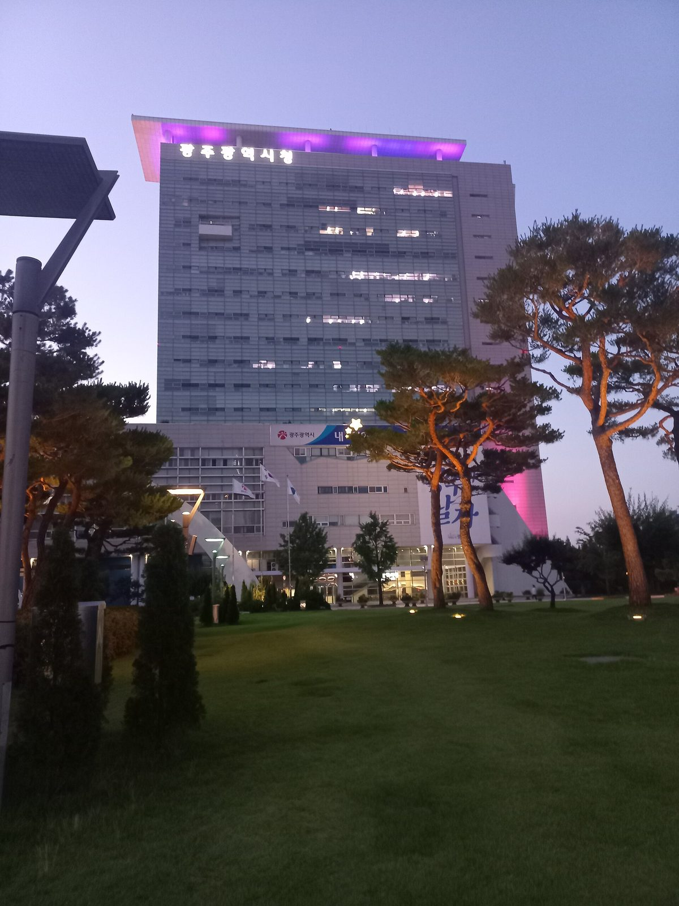

"택지·산단 공사에 맡기면 재생에너지는 뒷전"…전남광주시의회 행감서 '도시개발에너지공사' 통합 재검토·에너지공사 별도 설립 요구

박형대 의원 "두 공사 매출총이익 중 에너지사업 비중 1.2%·0.15%"…김승남 광주도시공사 사장 "전문성 갖춘 에너지공사가 출범해야 한다는 생각 변함없다"
전남광주통합특별시의회 박형대 의원(진보당·장흥1)이 4일 광주도시공사 행정사무감사에서 전남개발공사와 광주도시공사를 합쳐 '전남광주도시개발에너지공사'로 만드는 통합 추진을 다시 검토하고, 반도체 산업단지 조성 등으로 재생에너지 공급이 중요해진 만큼 재생에너지 사업을 전담할 공사를 따로 세워야 한다고 주장했다. 박 의원은 두 공사의 매출총이익에서 에너지사업이 차지하는 비중이 전남개발공사 1.2%, 광주도시공사 0.15%에 그친다며, 공사를 합친다는 이유만으로 재생에너지 사업이 살아나기는 어렵다고 밝혔다. 그는 택지 분양과 산업단지 조성이 본업인 공사에 에너지사업까지 맡기면 개발사업 재원 마련과 부채비율 관리에 밀려 오랜 투자가 필요한 재생에너지가 뒤로 밀릴 수 있고, 통합공사에서 에너지사업을 키운 뒤 별도 공사로 떼어 내겠다는 구상은 언제 실현될지 불분명하다고 지적했다. 김승남 광주도시공사 사장은 "전문성을 갖춘 에너지공사가 출범해야 한다는 생각에는 변함이 없다"며, 이런 입장을 관계자들에게 여러 차례 전했고 시의 정책이 바뀌도록 노력하겠다고 답했다. 같은 감사에서는 광주도시공사의 부채가 1조4,304억 원, 부채비율이 276%에 이른다는 지적도 나왔고, 박 의원은 통합 뒤 한쪽의 부채 부담이 다른 쪽으로 넘어가서는 안 된다는 취지로 말했다. 통합을 추진하는 시 집행부의 공식 입장은 이날 확인되지 않았다.
시민에너지 관점
서울시는 2016년 서울주택도시공사(SH)가 맡던 집단에너지 사업을 떼어 내 서울에너지공사를 따로 세웠고, 이 공사는 지역난방과 함께 태양광 등 재생에너지 보급을 맡아 왔다. 공사를 하나 더 만들면 조직과 비용만 늘어난다는 우려가 나올 수 있지만, 매출총이익의 1.2%와 0.15%라는 숫자는 개발 공사 안에서 에너지가 얼마나 곁가지였는지를 보여 준다. 중요한 것은 이름에 '에너지'를 붙이는 것이 아니라 재생에너지 전담 조직이 재원과 인력을 따로 갖고, 주민과 협동조합이 지분을 갖는 발전소를 함께 짓는 통로가 되는 것이다. 전남광주시는 통합 조례를 내놓기 전에 에너지사업의 재원·인력 계획과 주민 참여 방식을 의회와 시민 앞에 먼저 내놓아야 한다.
출처: 시사일보 2026-11-04 노평우 원문 보기
출처: 누리일보 2026-11-04 신현길 원문 보기
출처: 뉴시스 2026-11-04 변재훈 원문 보기
창간 전 시험 발행 기사입니다.
「宅地・産業団地の公社に任せれば再エネは後回し」…全南光州市議会の行政監査で「都市開発エネルギー公社」統合の再検討とエネルギー公社の別途設立を要求
パク・ヒョンデ議員「両公社の売上総利益に占めるエネルギー事業の比率は1.2%・0.15%」…キム・スンナム光州都市公社社長「専門性を備えたエネルギー公社が発足すべきだとの考えに変わりはない」
全南光州統合特別市議会のパク・ヒョンデ議員（進歩党、長興1）は4日、光州都市公社に対する行政事務監査で、全南開発公社と光州都市公社を統合して「全南光州都市開発エネルギー公社」とする統合推進を見直し、半導体産業団地の造成などで再生可能エネルギーの供給が重要になった以上、再エネ事業を専門に担う公社を別に設けるべきだと主張した。パク議員は、両公社の売上総利益に占めるエネルギー事業の比率が全南開発公社で1.2%、光州都市公社で0.15%にとどまるとし、公社を統合するというだけで再エネ事業が活性化するのは難しいと述べた。宅地分譲と産業団地造成を本業とする公社にエネルギー事業まで任せれば、開発事業の財源確保や負債比率の管理に押されて長期投資が必要な再エネが後回しになりかねず、統合公社でエネルギー事業を育ててから別の公社に切り離すという構想は実現の時期がはっきりしないとも指摘した。キム・スンナム光州都市公社社長は「専門性を備えたエネルギー公社が発足すべきだという考えに変わりはない」と述べ、この立場を関係者に何度も伝えており、市の政策が変わるよう努めると答えた。同じ監査では光州都市公社の負債が1兆4,304億ウォン、負債比率が276%に達するとの指摘も出ており、パク議員は統合後に一方の負債負担がもう一方に移ってはならないという趣旨の発言をした。統合を進める市執行部の公式な立場は、この日確認されなかった。
市民エネルギーの視点
ソウル市は2016年、ソウル住宅都市公社（SH）が担っていた集団エネルギー事業を切り離してソウルエネルギー公社を別に設立し、同公社は地域暖房とともに太陽光など再エネの普及を担ってきた。公社をもう一つ作れば組織と費用が増えるだけだという懸念もありうるが、売上総利益の1.2%と0.15%という数字は、開発公社の中でエネルギーがいかに傍流だったかを示している。大切なのは名前に「エネルギー」を付けることではなく、再エネ専門の組織が財源と人材を別に持ち、住民と協同組合が持ち分を持つ発電所を共に建てる窓口になることだ。全南光州市は統合条例を出す前に、エネルギー事業の財源・人材計画と住民参加の方法をまず議会と市民に示すべきだ。
出典: 時事日報 2026-11-04 ノ・ピョンウ 原文を読む
出典: ヌリ日報 2026-11-04 シン・ヒョンギル 原文を読む
出典: ニューシス 2026-11-04 ピョン・ジェフン 原文を読む
創刊前の試験発行記事です。
交给搞宅地和产业园区的公社，可再生能源就会被搁置…全南光州市议会行政监查要求重新审视“都市开发能源公社”合并、另设能源公社
Park Hyung-dae议员称“两家公社毛利中能源业务占比仅1.2%和0.15%”…光州都市公社社长Kim Seung-nam表示“应成立具备专业性的能源公社，这一想法没有改变”
韩国全南光州统合特别市议会议员Park Hyung-dae（进步党，长兴第1选区）4日在对光州都市公社的行政事务监查中主张，应重新审视把全南开发公社和光州都市公社合并为“全南光州都市开发能源公社”的推进方案；随着半导体产业园区建设等使可再生能源供应变得更加重要，应另设专门负责可再生能源业务的公社。Park议员表示，两家公社的毛利中能源业务占比，全南开发公社为1.2%，光州都市公社仅为0.15%，仅凭合并难以让可再生能源业务活跃起来。他指出，把能源业务交给以宅地分售和产业园区开发为主业的公社，可能因开发项目筹资和负债率管理而让需要长期投资的可再生能源退居次位；先在合并公社中培育能源业务、再分拆成立独立公社的设想，何时落实并不明确。光州都市公社社长Kim Seung-nam回应说：“应当成立具备专业性的能源公社，这一想法没有改变。”他表示已多次向有关方面转达这一立场，并将努力推动市政府调整政策。同一场监查中还有议员指出光州都市公社负债达14,304亿韩元、负债率达276%，Park议员也表示合并后不应把一方的负债负担转嫁给另一方。推动合并的市政府方面当天未见正式立场。
市民能源视角
首尔市2016年把首尔住宅都市公社（SH）负责的集中供能业务分拆出来，另设首尔能源公社，该公社在区域供暖之外还承担太阳能等可再生能源的普及工作。有人可能担心多设一个公社只会增加机构和成本，但毛利占比1.2%和0.15%这两个数字说明，能源在开发公社里一直只是旁支。关键不在于名称里加上“能源”二字，而在于可再生能源专门机构拥有独立的资金和人员，并成为与居民和合作社共同建设、由他们持股的电站的通道。全南光州市在提出合并条例之前，应先向议会和市民公开能源业务的资金与人员计划以及居民参与方式。
来源: 时事日报 2026-11-04 Noh Pyeong-woo 查看原文
来源: Nuri日报 2026-11-04 Shin Hyeon-gil 查看原文
来源: 纽西斯通讯社 2026-11-04 Byeon Jae-hun 查看原文
本文为创刊前试发行文章。
"Hand it to a land-development corporation and renewables come last": Jeonnam-Gwangju councillor calls for rethink of merged "urban development and energy corporation" and a separate energy company
Councillor Park Hyung-dae says energy accounts for just 1.2% and 0.15% of the two corporations' gross profit; Gwangju Metropolitan Urban Corporation CEO Kim Seung-nam says his view that a specialist energy corporation should be launched "has not changed"
Park Hyung-dae (Progressive Party, Jangheung 1), a member of the Jeonnam-Gwangju Integrated Special City Council, said at the council's Nov. 4 administrative audit of the Gwangju Metropolitan Urban Corporation that the planned merger of the Jeonnam Development Corporation and the Gwangju corporation into a "Jeonnam-Gwangju Urban Development and Energy Corporation" should be reconsidered, and that a separate corporation dedicated to renewable energy should be set up, since projects such as semiconductor industrial complexes have made renewable supply more important. Park said energy business accounts for only 1.2% of the Jeonnam Development Corporation's gross profit and 0.15% of the Gwangju corporation's, so merging the two would not by itself revive renewable energy projects. He argued that if corporations whose core business is selling housing land and building industrial parks are also given energy, renewables, which need long-term investment, could be pushed aside by the need to fund development projects and manage debt ratios, and that the idea of growing the energy business inside a merged corporation before spinning it off leaves unclear when, or whether, that would happen. Gwangju Metropolitan Urban Corporation CEO Kim Seung-nam replied that his view "that a specialist energy corporation should be launched has not changed," adding that he had conveyed this position to officials several times and would work for a change in the city's policy. The same audit also heard that the Gwangju corporation's debt stands at 1.4304 trillion won with a debt ratio of 276%, and Park said in effect that the merger must not shift one side's debt burden onto the other. The official position of the city administration, which is pushing the merger, was not reported that day.
Citizen Energy View
In 2016 Seoul split the district energy business off from the Seoul Housing & Communities Corporation (SH) to create a separate Seoul Energy Corporation, which has since handled district heating along with the spread of solar and other renewables. Some may worry that one more public corporation only adds staff and cost, but gross-profit shares of 1.2% and 0.15% show how marginal energy has been inside development corporations. What matters is not putting "energy" in a name but giving a dedicated renewable body its own funding and staff, and making it a channel for building plants in which residents and cooperatives hold stakes. Before tabling a merger ordinance, Jeonnam-Gwangju should first put before the council and citizens its funding and staffing plan for the energy business and how residents will take part.
Source: Sisa Ilbo 2026-11-04 Noh Pyeong-woo Read the original
Source: Nuri Ilbo 2026-11-04 Shin Hyeon-gil Read the original
Source: Newsis 2026-11-04 Byeon Jae-hun Read the original
This article was published during the trial period before launch.